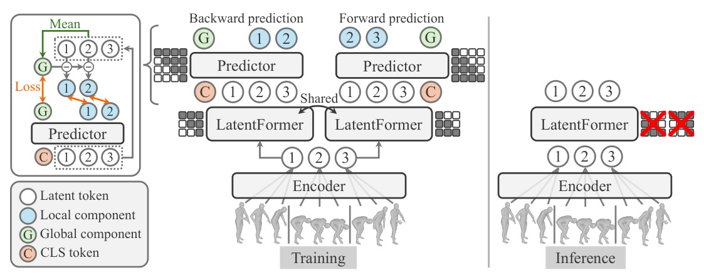
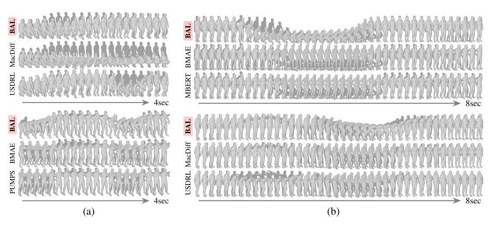
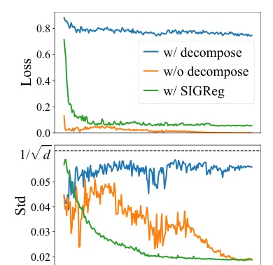
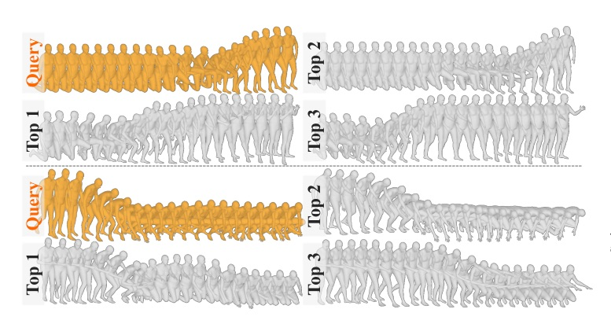

論文：BAL: Bidirectional Autoregression in Latent Space for Learning Human Movement Representations（arXiv 2611.18559v1，cs.CV）· venue 依 arXiv comment 與 PDF p.1 頁尾
不要預測下一個 pose，改預測下一段動作的 latent token——而且往前、往後都預測。日常行為的先後順序本身就是監督訊號。
Forecasting MPJPE（Nymeria）：BAL 82.1 mm，次佳 baseline 359.0 mm；captioning 多數指標最佳。
短期預測
長期預測
日常行為有先後順序：先拉椅子才坐下、先開冰箱才伸手進去。
而且推論是雙向的——看到伸手進冰箱，就知道剛剛開過門。
若表徵抓到動作語意，它就應該反映這些順序約束 → 把「預測相鄰語意單位」當訓練目標。
| 方法 | 預測什麼 | 防 collapse / 訓練穩定 | BAL 的批評 |
|---|---|---|---|
| CPC / DPC / wav2vec | 未來 latent | contrastive + 負樣本 | objective 設計複雜 |
| NEPA | 單層 conv 淺特徵 | — | 特徵綁在局部輸入，linear-probe 弱 |
| LeWM | 深層 Transformer 表徵 | SIGReg 正則 | 多超參；在人體動作上擋不住 collapse |
| A4Mer（同組前作） | JEPA latent | global/local 分解（為了可重用性） | 兩階段 pipeline + 啟發式超參 |
| BAL | 深層 latent token（雙向 AR） | global/local 分解（為了防 collapse） | — |

訓練
推論
反過來說：只要從相似表徵出發，預測 target 仍然很難、loss 夠大，collapse 就會被抑制 → 需要讓 target 保有足夠多樣性。
local 分量加總必為 0。只要 token 不全相同，正規化後至少有一對夾角 ≥ 90°——target 不可能變成「同一個方向」，predictor 沒法偷懶。
um = zml/||zml||，am = ||zml||。展開平方範數後用 Cauchy–Schwarz：2Σm<naman ≤ (M−1)Σam2。LayerNorm 版本類推見 App.B。
資料（混合預訓練）
三個下游任務
| Method | BLEU-1 Nym ↑ | CIDEr Nym ↑ | Fcst AMD ↓ | Fcst Nym ↓ | Fcst E3D ↓ | Interp AMD ↓ | Interp Nym ↓ | Interp E3D ↓ |
|---|---|---|---|---|---|---|---|---|
| A4Mer | 15.7 | 4.3 | 641.6 | 359.0 | 381.3 | 163.7 | 145.1 | 86.3 |
| PUMPS | 8.2 | 16.2 | 186.4 | 453.6 | 111.7 | 195.6 | 472.4 | 89.2 |
| USDRL | 27.1 | 32.5 | 136.1 | 373.8 | 90.2 | 117.7 | 424.6 | 59.2 |
| BehaveMAE | 33.9 | 49.4 | 195.5 | 394.8 | 152.7 | 135.6 | 103.5 | 77.8 |
| MotionBERT | 24.3 | 19.9 | 976.6 | 1623.2 | 248.7 | 136.7 | 348.7 | 69.5 |
| MacDiff | 36.7 | 65.6 | 160.0 | 371.8 | 73.2 | 112.7 | 454.1 | 56.6 |
| BAL | 37.3 | 63.1 | 90.5 | 82.1 | 63.8 | 117.5 | 77.0 | 59.2 |
誠實標註：CIDEr Nym 與 interpolation AMD / E3D 由 MacDiff 拿下（作者原文寫「most metrics」）。完整 14 欄見附錄。

| Method | Fcst AMD | Fcst Nym | Fcst E3D | Interp Nym |
|---|---|---|---|---|
| USDRL | 136.1 → 133.3 | 373.8 → 115.9 | 90.2 → 87.9 | 424.6 → 106.7 |
| MacDiff | 160.0 → 152.7 | 371.8 → 77.9 | 73.2 → 71.5 | 454.1 → 100.4 |
| BAL | 90.5 → 87.8 | 82.1 → 77.7 | 63.8 → 63.7 | 77.0 → 77.0 |
| 變體 | CIDEr Nym ↑ | BERT Nym ↑ | Fcst AMD ↓ | Interp Nym ↓ |
|---|---|---|---|---|
| Pose-space Bi-AR | 12.6 | 7.3 | 118.6 | 87.4 |
| JEPA, mask 15% | 46.2 | 25.2 | 109.3 | 112.4 |
| JEPA, mask 50% | 41.7 | 24.9 | 102.7 | 96.8 |
| Full BAL | 68.3 | 30.8 | 88.3 | 79.0 |
自回歸要求單一方向就能預測下一步，而下一步又被歷史緊緊約束。所以預測誤差代表的是「表徵缺資訊」，不是「多種合理動作之間的不確定」。
前者可以靠學更好的表徵修正，後者再怎麼學也降不下去——這就是 AR 監督比較「乾淨」的原因。

| 變體 | CIDEr Nym | Fcst AMD |
|---|---|---|
| w/o 分解 | 37.3 | 95.5 |
| SIGReg 取代 | 13.0 | 297.9 |
| w/o global | 12.4 | 172.9 |
| w/o 動態 λ | 49.6 | 170.0 |
| A4Mer-style 分解 | 24.3 | 107.2 |
| Full | 68.3 | 88.3 |
| 訓練 / 推論 | CIDEr Nym ↑ | BLEU-1 Nym ↑ | Interp Nym ↓ |
|---|---|---|---|
| AR / Causal | 63.7 (1.4) | 34.3 (1.5) | 88.3 (8.4) |
| AR / Non-Causal | 60.3 (1.2) | 33.4 (2.0) | 88.0 (4.1) |
| Bi-AR / Causal | 65.2 (1.5) | 35.1 (0.9) | 82.0 (1.6) |
| Bi-AR / Bi-Causal（兩趟拼接） | 62.6 (1.9) | 34.2 (1.2) | 81.6 (2.2) |
| Bi-AR / Non-Causal（Full） | 68.3 (1.3) | 36.5 (1.2) | 79.0 (1.2) |
| 設定 | BLEU-1 Nym ↑ | CIDEr Nym ↑ | Fcst Nym ↓ | Interp Nym ↓ |
|---|---|---|---|---|
| BAL 2 s | 37.4 | 62.6 | 72.2 | 70.3 |
| BAL 3 s | 33.4 | 63.6 | 82.2 | 75.2 |
| BAL 4 s（主文） | 37.3 | 63.1 | 82.1 | 77.0 |
| BAL 5 s | 41.4 | 71.8 | 87.5 | 80.7 |
| Best prior | 36.7 | 65.6 | 359.0 | 103.5 |
| Method | BLEU-1 Nym ↑ | CIDEr Nym ↑ | BERT Nym ↑ | Fcst AMD ↓ | Interp Nym ↓ |
|---|---|---|---|---|---|
| XLNet-style | 35.2 | 42.9 | 26.7 | 85.8 | 79.3 |
| BAL | 37.3 | 63.1 | 29.6 | 90.5 | 77.0 |
frame-level autoregressive prediction in pose space does not naturally produce semantic representations. Short-term joint trajectory smoothness is sufficient to minimize such a loss
pose 空間的逐幀自回歸不會自然產生語意表徵：只靠短期關節軌跡平滑就足以壓低 loss§1 p.2
at least one pair of normalized local components is separated by an angle of at least 90°
至少有一對正規化 local 分量的夾角 ≥ 90°§3.3 p.6
Its prediction errors therefore reflect a lack of information in the representations needed for prediction, rather than uncertainty among plausible actions
AR 的預測誤差反映表徵缺乏預測所需資訊，而不是多種合理動作間的不確定§4.6 p.9
inferring the semantics of each motion chunk jointly from past and future context is more effective than processing the two contexts independently
同時從過去與未來推斷每個 chunk 的語意，比分開處理再合併更有效§4.6 p.10
| Method | BLEU-1 Nym | BLEU-1 E3D | R-L Nym | R-L E3D | CIDEr Nym | CIDEr E3D | BERT Nym | BERT E3D |
|---|---|---|---|---|---|---|---|---|
| A4Mer | 15.7 | 32.9 | 20.5 | 22.1 | 4.3 | 4.3 | 8.7 | 10.2 |
| PUMPS | 8.2 | 58.7 | 17.0 | 44.8 | 16.2 | 17.3 | 9.5 | 34.3 |
| USDRL | 27.1 | 58.0 | 34.8 | 45.3 | 32.5 | 18.4 | 17.7 | 35.0 |
| BehaveMAE | 33.9 | 58.8 | 38.3 | 44.6 | 49.4 | 17.4 | 24.6 | 33.6 |
| MotionBERT | 24.3 | 58.4 | 36.6 | 45.2 | 19.9 | 16.7 | 15.8 | 35.2 |
| MacDiff | 36.7 | 58.2 | 41.4 | 44.7 | 65.6 | 17.8 | 28.5 | 33.6 |
| BAL | 37.3 | 58.9 | 41.2 | 45.3 | 63.1 | 18.6 | 29.6 | 35.0 |
BERT E3D：MotionBERT 35.2 為最高（BAL 35.0）；R-L E3D：USDRL 與 BAL 並列 45.3。LLM：Llama 3.1 8B Instruct（凍結），只訓投影 MLP。

BAL · NeurIPS 2026 · Kinoshita & Nishino（Kyoto University）· arXiv 2611.18559